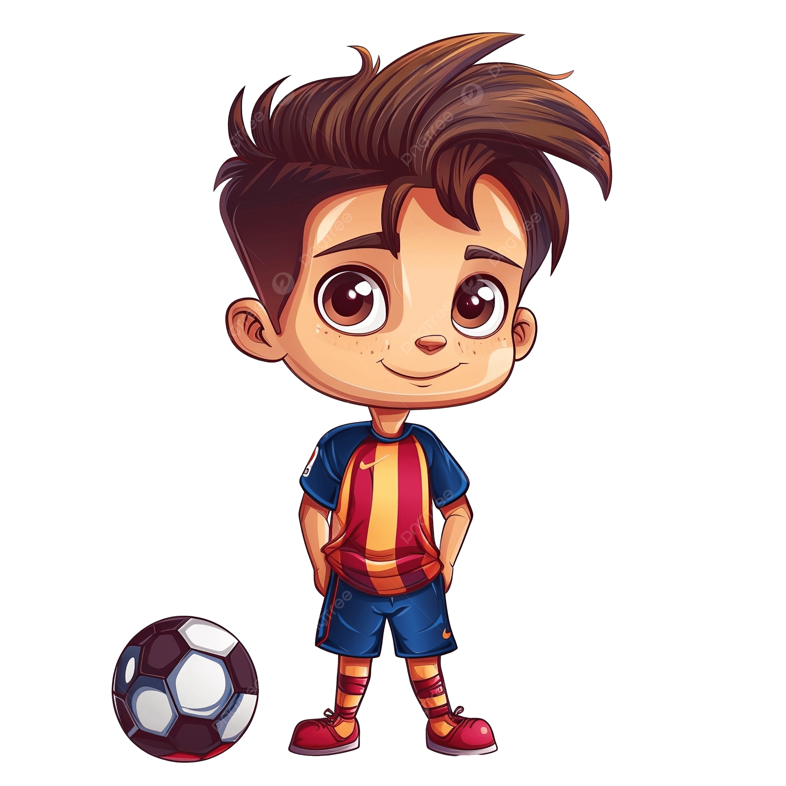

La Masia: o coração da formação
A La Masia é o centro de formação do Barcelona e responsável por revelar grandes talentos. Além do treinamento técnico, os jovens aprendem valores como disciplina, respeito e trabalho em equipe, fundamentais para a cultura do clube.
